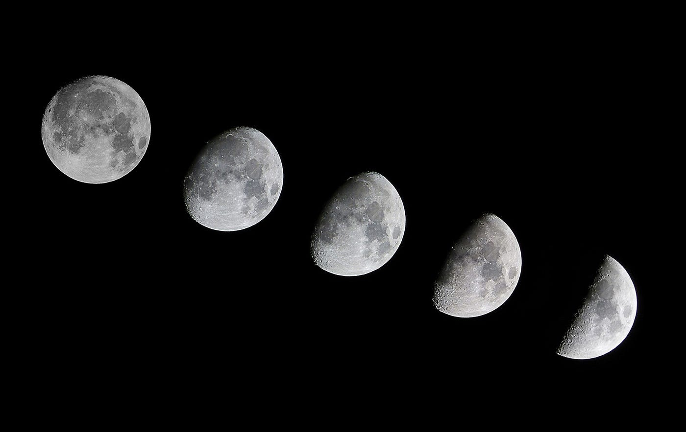
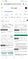

Sorting algorithms are keys and this functionality


Why not filter and sort content based on lunar cycles. Of course, it is crazy but it can useful.
Our cycle of software development is like a lunar cycle. At each full moon, we deliver brilliant software. With this cycle, we are shipping more software than anybody else in the industry even Microsoft. You know what we are almost unknown while being the best software company in the world that could be worth... But we keep a promise not to go into all these overwhelming financial deals and markets and focus our effort on making better things for a small group of people and companies.
You Know what? we are everywhere because we are running on top of a fully connected digital workspace enabling several stacks of remote activities.
Who are we?
